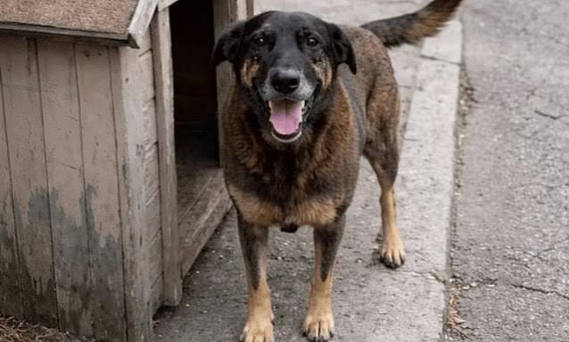

Clube Patinhas
Como cuidar
Aliemntação
Escove os dentes
só com pastas para cães
Passeios
Filhotes só passeiam
com as vacinas em dia
Pegar a guia
Passear
Dar água
Raças
Beagle
Poodle
Vira-lata
Filhote
Cão com menos de um ano.
Sobre cães - Wikipédia
